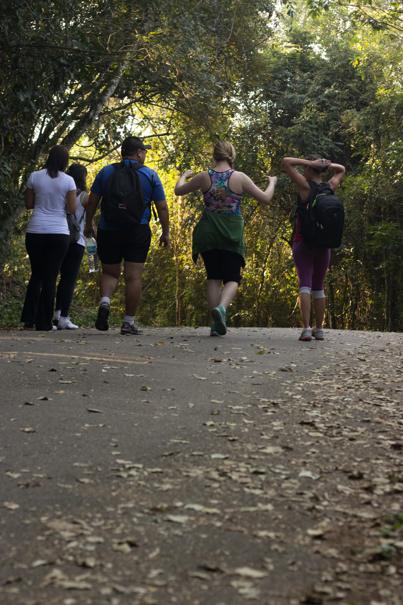
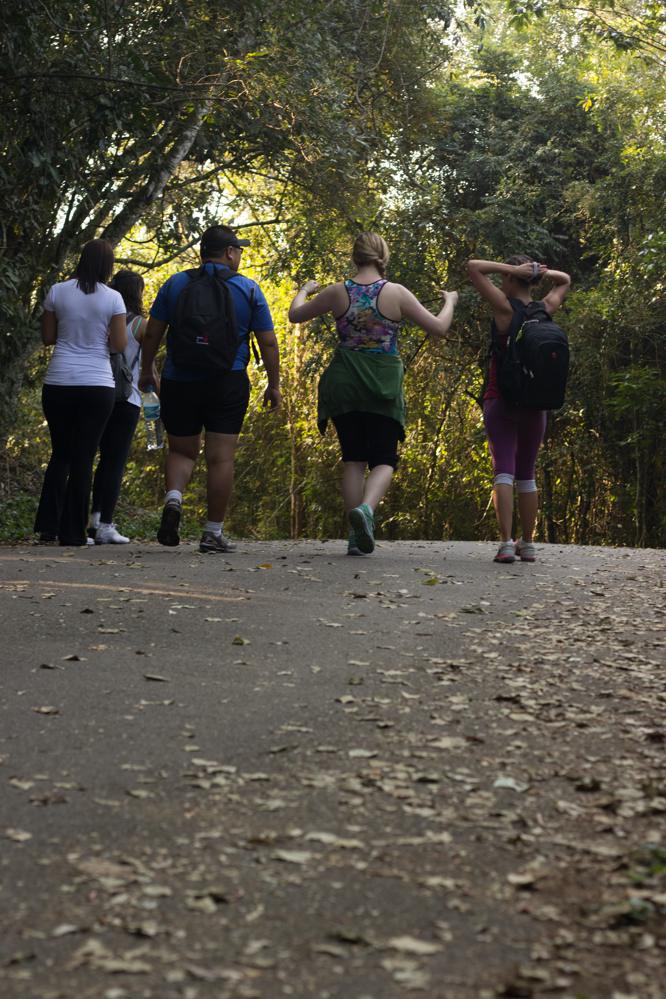

What are the health benefits of exercise?
- Help you control your weight.
- Reduce your risk of heart diseases.
- Help your body manage blood sugar and insulin levels.
- Help you quit smoking.
- Improve your mental health and mood.
- Help keep your thinking, learning, and judgment skills sharp as you age.
- Strengthen your bones and muscles.
- Reduce your risk of some cancers, including breast,uterine, and lung cancer.
- Improve your sleep.
- Improve your sexual health.
- Increase your chances of living longer.
Read more


How can I make exercise a part of my regular routine
- Make everyday activities more active.
- Be active with friends and family.
- Keep track of your progress.
- Make exercise more fun.
- Find activities that you can do even when the weather is bad.
- 1.Plan for it: Put your workouts on your calendar or in your agenda daily.
- 2.Make it a part of regular activities: Use the stairs at work or when shopping. Tighten your abs or squeeze your thigh muscles tight while you sit at your desk or while waiting in line. During commercial breaks of your favorite show or sporting event, try doing crunches (mix it up with squats, push-ups and planks).
- 3.Make it more enjoyable: Join a recreational team or league. Work out with friends, family and co-workers, either safely outdoors or in a virtual environment like online yoga classes. This has the bonus of creating accountability partners within these groups.
- 4.Make health and well-being a priority: Are there other activities that could be shortened to fit your physical activity? Physical activity does not have to come in hour-long doses. Being moderately active for even 10 minutes at a time can make a positive difference.
- 5.Keep track: Use an activity tracker or online fitness app to help with goal setting and progress tracking. Seeing progress makes a huge difference in continually striving for results.
Read more
 



Aerobic exercise/Cardio exercise
Cardio helps burn a lot of calories, speeds up our metabolism and improves our body mass index (BMI). Performing cardio exercises regularly will help us maintain our ideal weight. It helps control blood pressure and strengthens the immune system.

Anaerobic exercise/Non-cardio exercise
Anaerobic exercise helps boost metabolism as it builds and maintains lean muscle. The more lean muscle you have, the more calories you'll burn during your next sweat session. High-intensity exercise is also thought to increase your post-workout calorie burn.
Healthy Diet
A healthy diet rich in fruits, vegetables, whole grains and low-fat dairy can help to reduce your risk of heart disease by maintaining blood pressure and cholesterol levels. High blood pressure and cholesterol can be a symptom of too much salt and saturated fats in your diet.